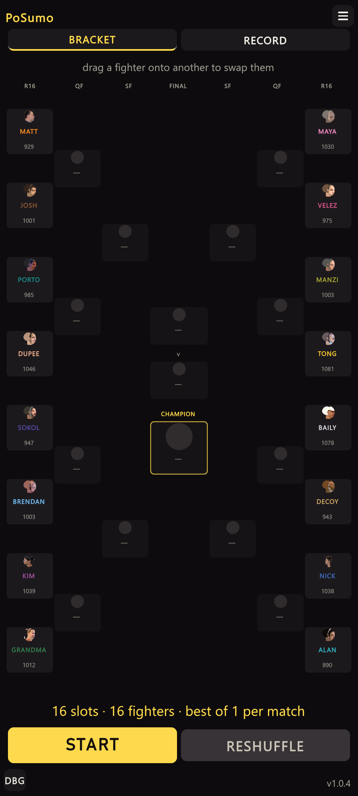
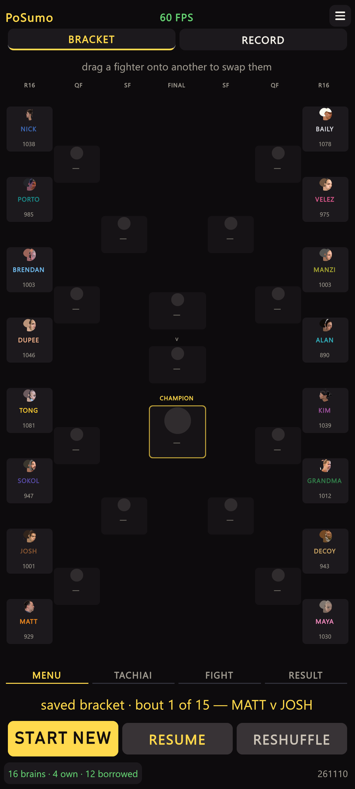
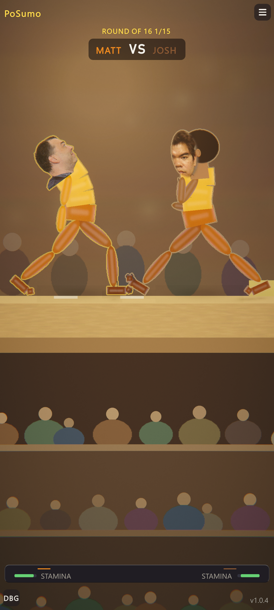
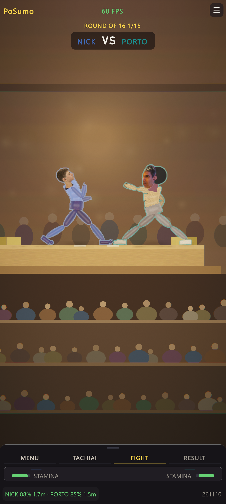
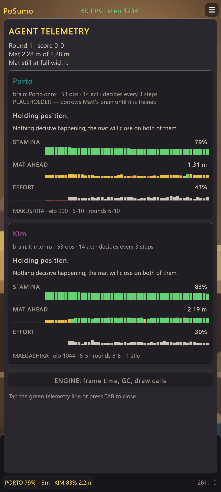
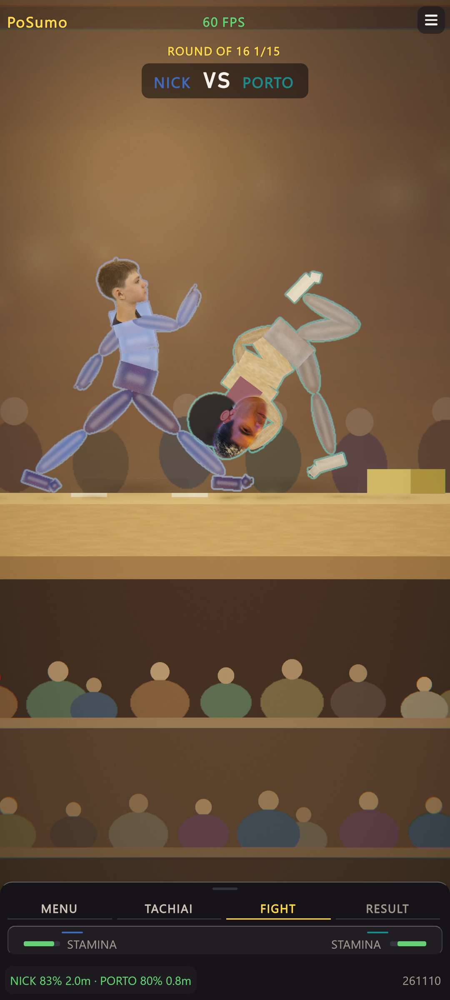

HUD sheet pass — 2026-11-10
Layout option 01 (bottom-sheet) and the state-flow boards from the HUD options canvas, built into the game. 1080×2400 captures from Tools/portrait_check.py; overflow audit 0 findings on bracket, arena, pause and notch-sim; console 0 errors. Presentation only, so no brain is affected.
What changed
- Bottom-right:
v1.0.4→ build dateYYMMDD. Written into the player byWriteBuildStampbefore every build; the Editor shows today. The version moved to Settings › DISPLAY › BUILD. - Bottom-left: the
DBGchip → a live agent telemetry line (arena: name, stamina, mat left per fighter; bracket: brains own/borrowed, bout n/15). Tapping it opens the debug panel, so phones keep a way in; it turns gold while open. - Top-centre: frame rate is always shown; the physics step count is appended while TAB debug is open.
- Arena dock → bottom sheet (
Systems_HudSheet): raised surface, grabber, and a MENU › TACHIAI › FIGHT › RESULT strip polled from the referee. The bracket footer carries the same strip with MENU lit.
Bracket (Menu)


Arena (Fight)


TAB debug open

step 1236; the stream turns gold and closes the panel when tapped.